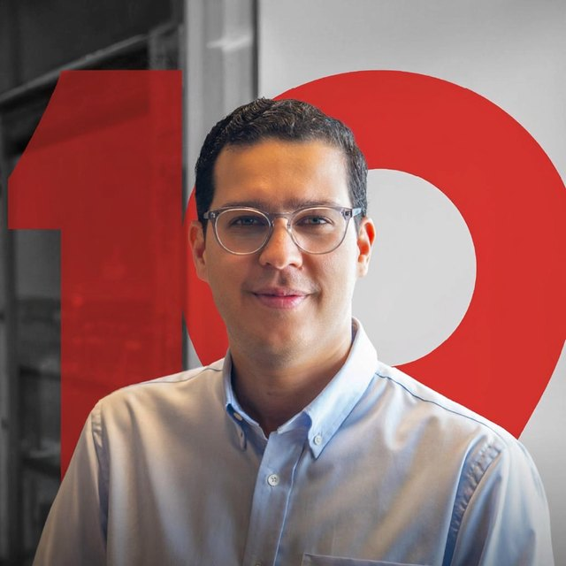

Charla · Estudiantes de secundaria · Español
Presentación de Venture.do a estudiantes de secundaria en evento de Promipymes
Cómo funciona el mundo de las startups: qué son, ejemplos del mundo, de Latinoamérica y de República Dominicana, cómo se financian con venture capital y quién apoya a los emprendedores en el país.

Michael Jacobo
Managing Partner, Venture.do